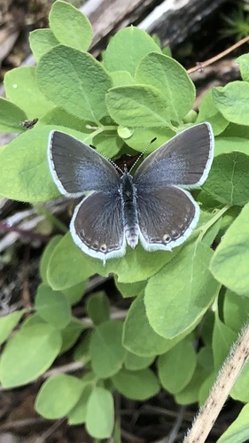

Western Tailed-Blue
Cupido amyntula butterfly / moth

Small tailed-blue butterfly. Caterpillars feed on legume seedpods (milkvetch, vetch).
13 documented plant relationships.
sips nectar at
 Superior National Forest, some rights reserved (CC BY)") Cream-Coloured PeavineLathyrus ochroleucusPurple PeavineLathyrus venosus
Cream-Coloured PeavineLathyrus ochroleucusPurple PeavineLathyrus venosus Tom Norton, some rights reserved (CC BY), uploaded by Tom Norton") Star-flowered Solomon's SealMaianthemum stellatumSweet Broom (Alpine Sweetvetch)Hedysarum alpinum
Star-flowered Solomon's SealMaianthemum stellatumSweet Broom (Alpine Sweetvetch)Hedysarum alpinum Katja Schulz, some rights reserved (CC BY)") Western Canada VioletViola canadensis
Western Canada VioletViola canadensis Abby Hyde, some rights reserved (CC BY), uploaded by Abby Hyde") Wild StrawberryFragaria virginiana
Wild StrawberryFragaria virginiana Andrea Romero, some rights reserved (CC BY), uploaded by Andrea Romero") Wild VetchVicia americana
Wild VetchVicia americana
 Jim Morefield, some rights reserved (CC BY), uploaded by Jim Morefield")
 Matt Lavin, some rights reserved (CC BY-SA)")
 Matt Lavin, some rights reserved (CC BY-SA)")